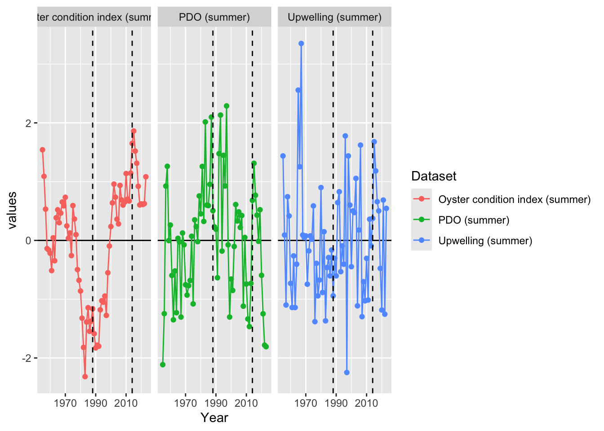
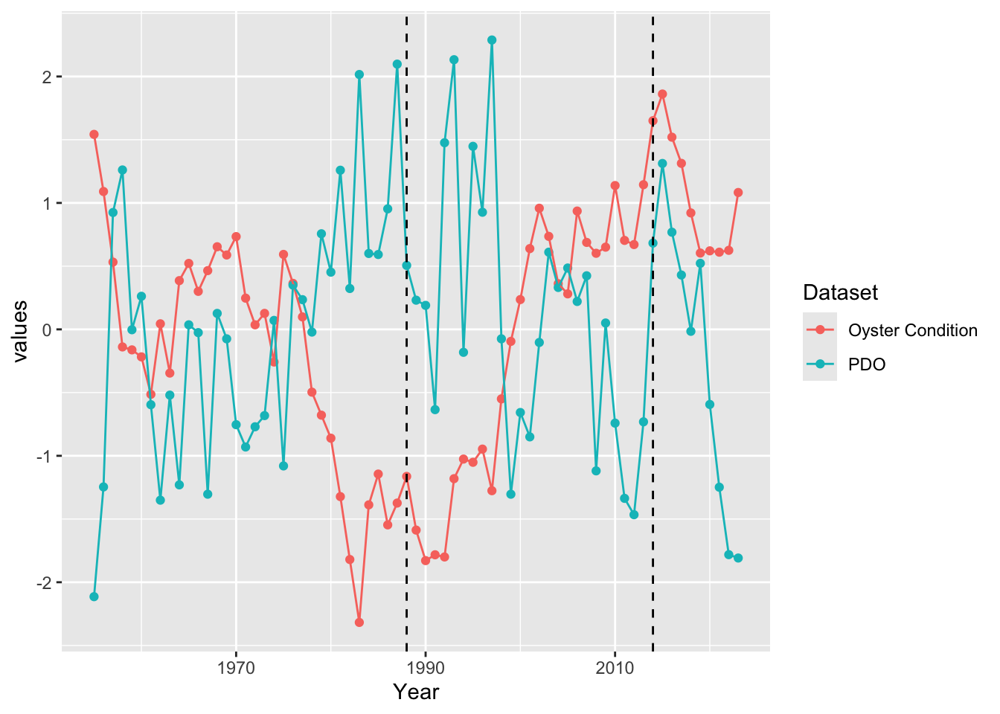
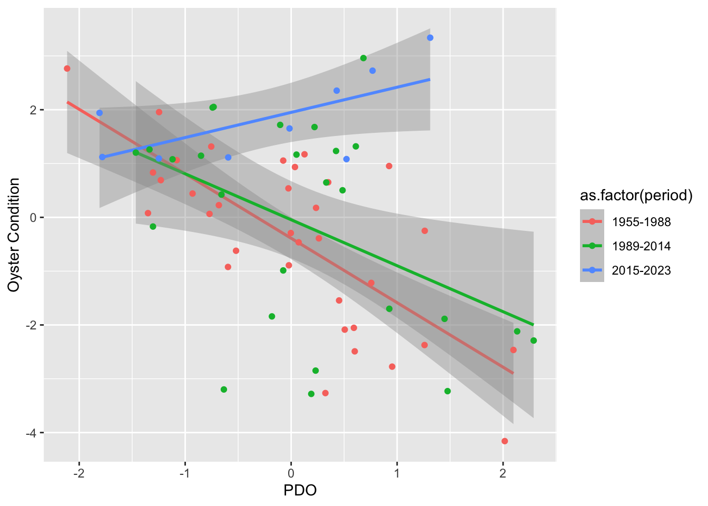
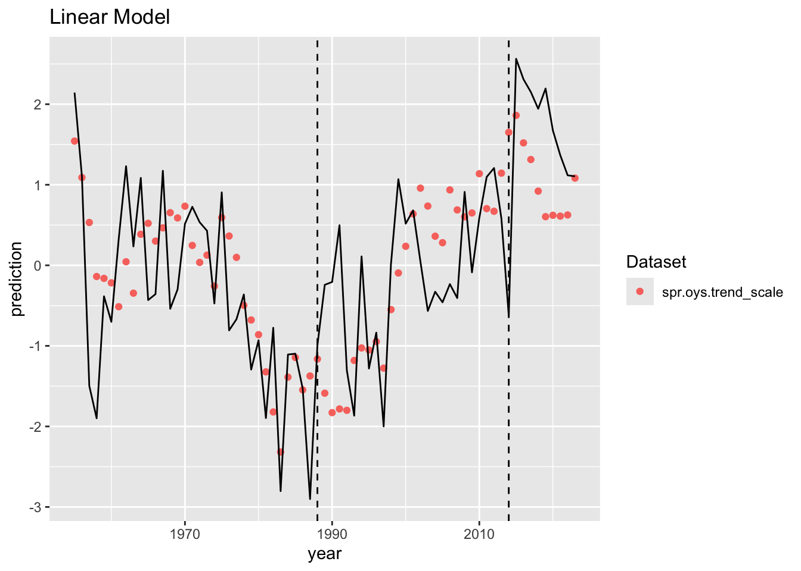
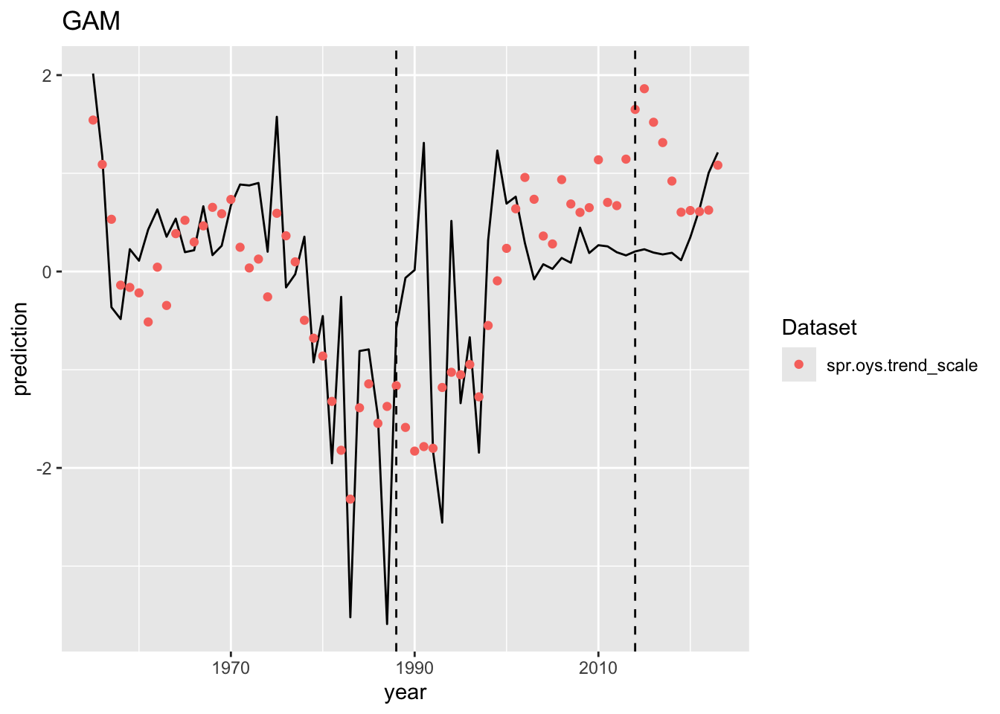

WA Oyster Condition Case Study
Approach for WA oyster condition data using linear regression models with time periods defined a-priori and temporally structured GAMs.
First we start with looking at three time periods using linear regression models:
1. Before 1998/1989
2. Between 1988/1989 and 2014/2015
3. After 2014/2015
To examine this we start by using intercept only models through time:
1. Oyster Condition Index
2. PDO
3. Upwelling
We approach this by fitting a linear model with the a priori time periods as a factor and compare AIC to a single intercept model.
We find that oyster condition index is better explained by a model that includes apriori defined time periods improves model fit.
| Variable | No.Period.AIC | Period.AIC |
|---|---|---|
| Oyster condition index (summer) | 198.81 | 190.56 |
| PDO (summer) | 198.81 | 201.94 |
| Upwelling (summer) | 198.81 | 202.06 |
Next we consider whether there are changing relationships between oyster condition index and PDO by including a slope parameter and its interaction with time period.
| Covariates | Period | Interaction |
|---|---|---|
| PDO | 254.44 | 246.73 |
| Upwelling | 268.19 | 270.12 |
PDO best explains oyster condition index with a time varying relationship. We examine how this relationship changes through time.
[1] "PDO"| term | Estimate | Std. Error | t value | Pr(>|t|) |
|---|---|---|---|---|
| (Intercept) | -0.4952477 | 0.2354799 | -2.1031426 | 0.0394534 |
| spr.pdo | -1.2289395 | 0.2524940 | -4.8672037 | 0.0000079 |
| as.factor(period)2 | 0.3743244 | 0.3569023 | 1.0488148 | 0.2982703 |
| as.factor(period)3 | 2.4874412 | 0.5348614 | 4.6506275 | 0.0000174 |
| spr.pdo:as.factor(period)2 | 0.3526067 | 0.3742069 | 0.9422774 | 0.3496501 |
| spr.pdo:as.factor(period)3 | 1.7085736 | 0.5015693 | 3.4064555 | 0.0011508 |

`geom_smooth()` using formula = 'y ~ x'
Now we compare the PDO-oyster condition relationship by fitting a linear model and comparing it to s temporally structured gam.

Optimal (m+1)-segment partition:
Call:
breakpoints.formula(formula = y.ts ~ 1)
Breakpoints at observation number:
m = 1 55
m = 2 21 53
m = 3 21 43 56
m = 4 21 33 43 56
m = 5 11 21 33 43 56
Corresponding to breakdates:
m = 1 55
m = 2 21 53
m = 3 21 43 56
m = 4 21 33 43 56
m = 5 11 21 33 43 56
Fit:
m 0 1 2 3 4 5
RSS 101.01 67.70 57.13 46.39 44.82 44.70
BIC 230.58 211.44 208.19 202.29 208.39 216.67 prediction year
55 -0.08762268 2009 prediction year
21 0.9057433 1975 prediction year
53 -0.4066078 2007
Optimal (m+1)-segment partition:
Call:
breakpoints.formula(formula = y.ts ~ 1)
Breakpoints at observation number:
m = 1 21
m = 2 24 43
m = 3 24 34 44
m = 4 14 24 34 44
m = 5 14 24 34 44 59
Corresponding to breakdates:
m = 1 21
m = 2 24 43
m = 3 24 34 44
m = 4 14 24 34 44
m = 5 14 24 34 44 59
Fit:
m 0 1 2 3 4 5
RSS 70.97 62.29 39.36 37.89 37.78 37.71
BIC 206.23 205.69 182.48 188.32 196.60 204.93 prediction year
21 1.575455 1975 prediction year
24 0.3545659 1978 prediction year
43 -1.844375 1997